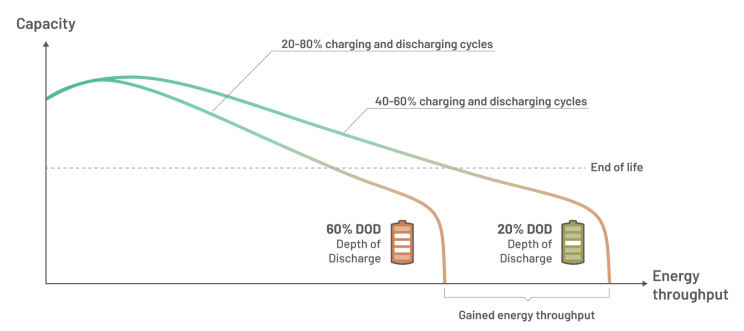
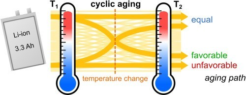
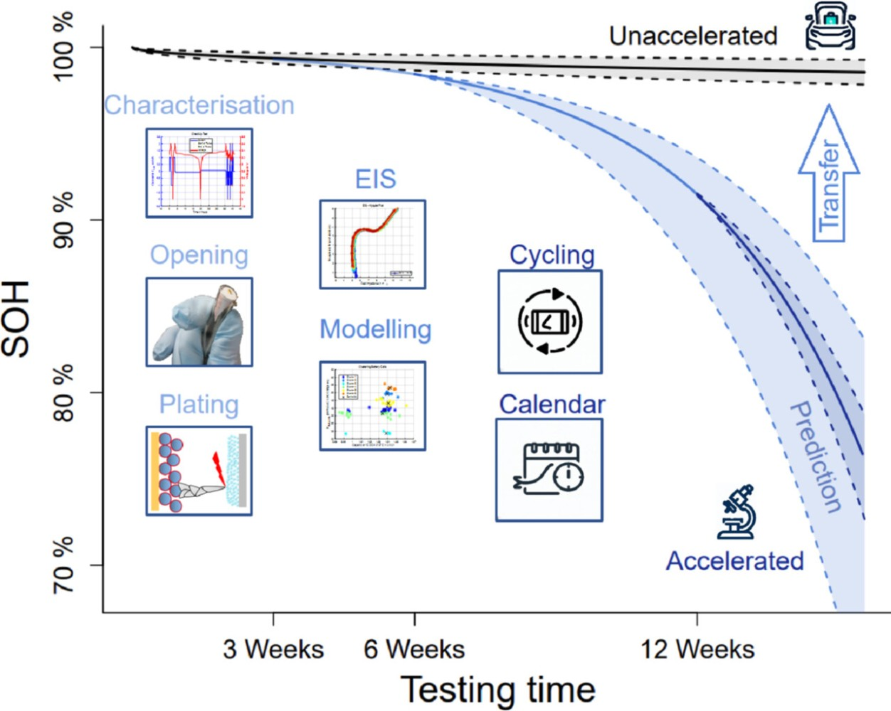
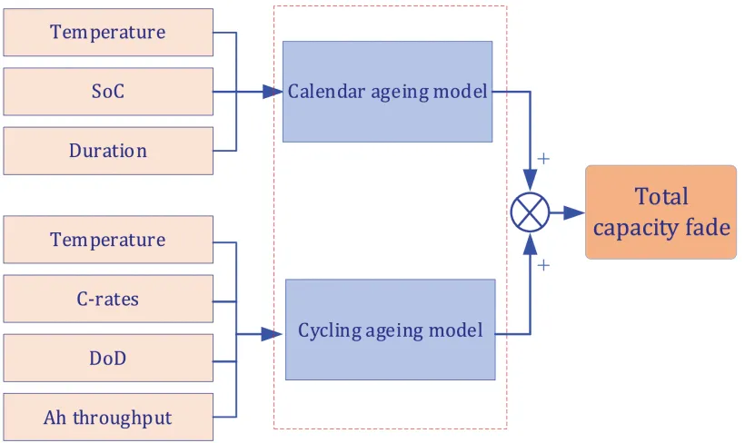
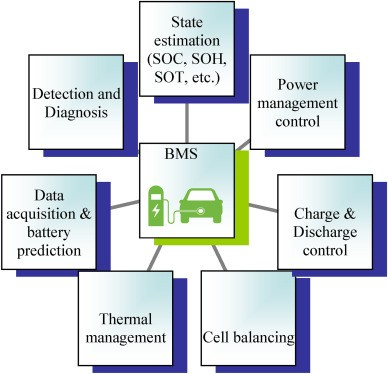
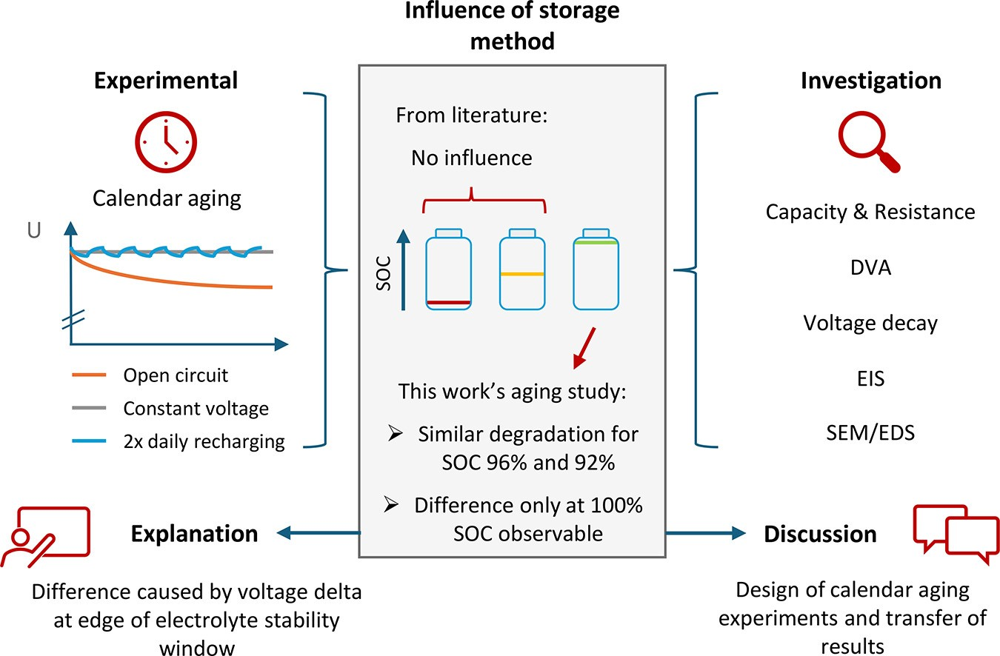
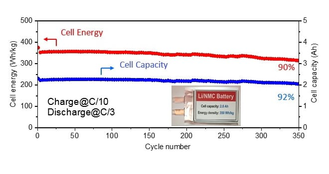
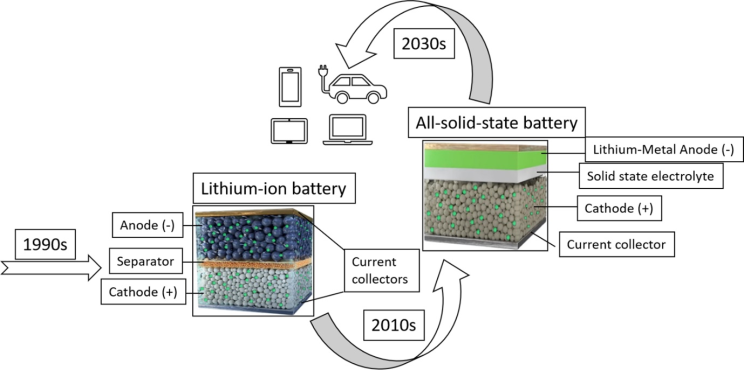

Battery longevity encompasses two critical but distinct dimensions that fundamentally determine how long our energy storage systems will serve us effectively. While cycle life measures a battery's endurance through repeated charge and discharge operations, calendar life represents the inexorable march of time-dependent degradation that occurs regardless of usage patterns.
Research indicates that calendar aging can account for up to 50% of capacity loss in some grid storage devices, while cycle life directly translates to mileage expectations in electric vehicles. The interplay between these two aging mechanisms shapes everything from warranty structures to optimal storage strategies, making their comprehension crucial for maximizing battery investments and performance.
Understanding Battery Cycle Life
Cycle life represents one of the most commonly discussed metrics in battery performance evaluation, referring specifically to the number of complete charge and discharge cycles a battery can undergo before its capacity degrades to a predetermined threshold, typically 80% of its original capacity.
This metric provides a tangible measure of how many times users can expect to fully utilize their battery before experiencing noticeable performance degradation. The concept fundamentally revolves around the mechanical and chemical stress that repeated charging and discharging places on the battery's internal structure, gradually wearing down the active materials and reducing the battery's ability to store and deliver energy effectively.

Different battery chemistries exhibit dramatically varying cycle life characteristics due to their underlying electrochemical processes and material compositions. Lithium-ion batteries commonly found in consumer electronics typically achieve 300-500 charge cycles, while lead-acid batteries used in automotive applications generally endure approximately 200-300 cycles before reaching their end-of-life threshold. These variations reflect the inherent stability and durability of different chemical systems under repeated stress, with some chemistries proving more resilient to the structural changes that occur during cycling.
Key Factors Influencing Cycle Life Performance
The depth of discharge (DoD) emerges as one of the most significant factors affecting cycle life, with deeper discharges typically resulting in shorter overall battery lifespan. Batteries that are continuously depleted to 20% capacity may experience significantly fewer cycles compared to those discharged only to 50% capacity, as deeper discharges place greater stress on the battery's internal structure and accelerate degradation processes. This relationship has led to the development of battery management strategies that deliberately limit discharge depth to maximize cycle life, even at the cost of reduced immediate energy availability.

Temperature represents another critical variable that dramatically influences cycle life performance, with extreme temperatures at both ends of the spectrum accelerating battery degradation. High temperatures increase the rate of chemical reactions inside the battery, leading to faster breakdown of internal components and reduced cycle life. Conversely, low temperatures can cause lithium plating on the anode, which permanently reduces battery capacity and creates safety concerns. Optimal operating temperatures typically fall within moderate ranges, where chemical processes remain stable while avoiding thermal stress.
Exploring Battery Calendar Life
The Time-Dependent Nature of Battery Aging
Calendar life represents a fundamentally different aspect of battery degradation that occurs independently of usage patterns, measuring how long a battery can function from its production date until its performance degrades to a defined point, regardless of how many charge and discharge cycles it has experienced.
The calendar life concept becomes particularly relevant when considering that most batteries spend the majority of their existence in a non-operational state. Electric vehicle batteries, for example, undergo calendar aging for nearly two-thirds of each day when vehicles are parked, while grid storage systems may remain idle for extended periods between discharge events. This reality means that even batteries with excellent cycle life performance may fail prematurely due to calendar aging if they are not used frequently enough to reach their cycle life limits before time-dependent degradation renders them ineffective.

Typical calendar life expectations vary significantly based on battery chemistry and storage conditions, with lithium-ion batteries generally exhibiting calendar lives between 8 and 15 years under normal conditions. Some high-quality lithium-ion batteries may achieve calendar lives extending to 15-20 years under optimal storage conditions, while others may experience significant degradation in much shorter timeframes if exposed to adverse environmental conditions.
Environmental and Chemical Factors Affecting Calendar Life
For lithium iron phosphate (LFP) batteries, calendar life expectations drop dramatically as temperature increases, with batteries stored at 35-40°C exhibiting calendar lives of 5-6 years, while those exposed to temperatures above 45°C may experience calendar life degradation to just 1-2 years.
State of charge (SoC) during storage periods also profoundly impacts calendar life, with higher charge states generally accelerating aging processes. Storing batteries at 40-50% SoC is frequently recommended for maximum calendar life, as this charge level minimizes the driving force for parasitic reactions while maintaining sufficient energy for battery management system operation.

Lithium iron phosphate (LFP) batteries often demonstrate superior calendar life compared to nickel-rich chemistries, reflecting the inherent stability of the iron phosphate crystal structure and its resistance to structural changes over time.
Critical Differences and Comparative Analysis
The primary distinction between calendar life and cycle life lies in their underlying degradation drivers, with cycle life being determined by usage patterns and energy throughput while calendar life depends purely on the passage of time and storage conditions. High-usage applications like electric vehicle taxi fleets may reach cycle life limits before calendar aging becomes significant, while seasonal equipment or emergency backup systems may experience calendar life limitations despite minimal cycling.

The measurement timeframes for these two metrics also differ substantially, with cycle life testing typically completed within 8 months for 1000 cycles at C/3 rates, while calendar life assessment requires years of real-time aging studies.
Comparative Impact on Different Applications
A typical EV battery with 1000 cycles and 300-mile range per charge can theoretically provide over 250,000 miles before reaching end-of-life, which exceeds the operational lifespan of internal combustion engines. However, calendar aging continues throughout the vehicle's 10-year expected lifespan regardless of mileage accumulation, potentially limiting battery performance even in low-mileage vehicles.

Grid energy storage systems that experience infrequent cycling may find calendar aging accounting for up to 50% of total capacity loss, while consumer electronics with daily charging cycles may be primarily limited by cycle life performance.
Smartphones and laptops undergo nearly daily charging cycles, accumulating hundreds of cycles annually and often reaching cycle life limits within 2-3 years of typical use.
Optimization Strategies for Different Scenarios
Managing Cycle Life Through Operational Controls
Depth of discharge management represents one of the most effective strategies for extending cycle life, with partial discharge cycles significantly reducing stress on battery materials compared to full discharge operations.
Battery management systems increasingly incorporate algorithms that limit discharge depth to optimize the trade-off between immediate energy availability and long-term durability. Electric vehicle manufacturers commonly implement buffer zones that prevent users from fully depleting batteries, preserving both performance and longevity while maintaining acceptable driving range.
Thermal management emerges as equally critical for cycle life optimization, requiring sophisticated cooling and heating systems to maintain batteries within optimal temperature ranges during operation. Advanced battery packs incorporate liquid cooling systems, phase change materials, and intelligent thermal controls that prevent temperature excursions that could accelerate cycle aging. These systems add complexity and cost but prove essential for applications requiring maximum cycle life performance.

Calendar Life Preservation Through Storage Management
Optimal storage conditions require careful control of both temperature and state of charge to minimize calendar aging during periods of non-use. The recommended storage temperature range of 10-15°C significantly slows chemical degradation processes while remaining practically achievable in controlled environments. Similarly, maintaining batteries at approximately 50% state of charge during storage provides the optimal balance between minimizing degradation driving forces and retaining sufficient energy for periodic maintenance operations.
Long-term storage protocols for unused batteries involve periodic maintenance cycles that prevent deep discharge and maintain battery management system functionality. These protocols typically include monthly or quarterly charge/discharge cycles that exercise the battery sufficiently to prevent permanent capacity loss while minimizing total energy throughput. Automated storage systems can implement these protocols without human intervention, ensuring optimal calendar life preservation for large battery inventories.

Future Developments and Research Directions
Silicon-based lithium-ion batteries represent a promising avenue for improved energy density but face significant calendar life challenges that may limit their practical deployment. While these batteries have demonstrated impressive cycle life performance with over 600 cycles achieved through novel electrolytes and electrode architectures, calendar life performance has not yet breached the 2-year mark. This limitation highlights the ongoing challenge of balancing different performance metrics in next-generation battery development.
Lithium metal batteries offer potentially revolutionary energy density improvements but require comprehensive calendar life evaluation before widespread commercialization. Current research focuses on understanding the time-dependent degradation mechanisms specific to lithium metal systems and developing strategies to mitigate calendar aging while preserving the energy density advantages that make these systems attractive. The Battery500 Consortium continues to make progress on cycle life performance while recognizing the need for parallel advances in calendar life understanding.

Solid-state battery technologies promise improved safety and potentially enhanced calendar life through elimination of liquid electrolyte degradation pathways, but comprehensive long-term aging studies remain limited. These systems may offer fundamental advantages in calendar life due to reduced chemical reactivity and improved thermal stability, but practical validation requires extensive real-time aging studies that have not yet been completed. The development timeline for solid-state batteries must account for both performance validation and long-term durability assessment.

Conclusion: Maximizing Your Battery's Potential
The exploration of calendar life and cycle life reveals that battery longevity is a dynamic interplay of time, usage, and intricate electrochemical processes. Understanding these distinct yet interconnected aspects of degradation, along with the critical factors influencing them—such as temperature, State of Charge, and Depth of Discharge—is fundamental to appreciating battery performance. The real-world implications of this degradation are profound, impacting everything from the range and safety of electric vehicles to the reliability of grid storage systems and the practical lifespan of our everyday consumer electronics.